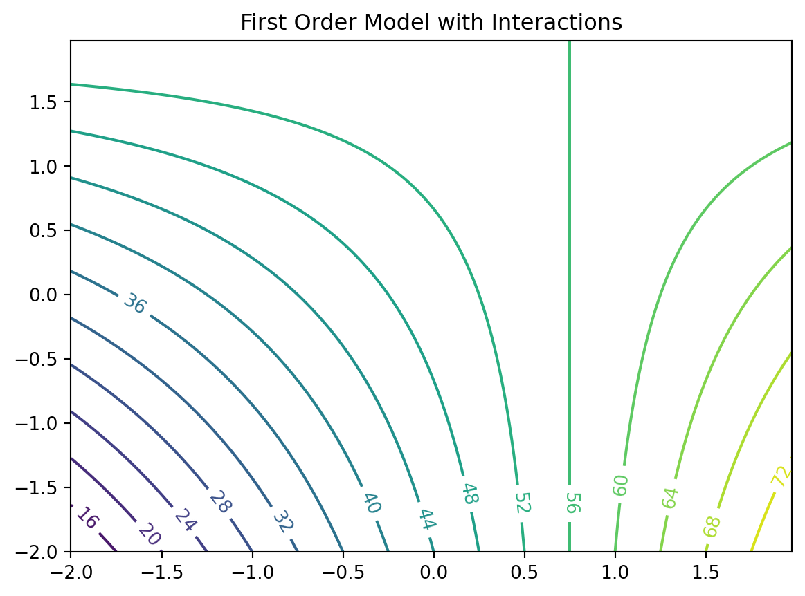

This part deals with numerical implementations of optimization methods. The goal is to understand the implementation of optimization methods and to solve real-world problems numerically and efficiently. We will focus on the implementation of surrogate models, because they are the most efficient way to solve real-world problems.
Starting point is the well-established response surface methodology. It will be extended to the design and analysis of computer experiments (DACE). The DACE methodology is a modern extension of the response surface methodology. It is based on the use of surrogate models, which are used to replace the real-world problem with a simpler problem. The simpler problem is then solved numerically. The solution of the simpler problem is then used to solve the real-world problem.
Numerical methods: Goals
Understand implementation of optimization methods
Solve real-world problems numerically and efficiently
5.1 Response Surface Methods: What is RSM?
Response Surface Methods (RSM) refer to a collection of statistical and mathematical tools that are valuable for developing, improving, and optimizing processes. The overarching theme of RSM involves studying how input variables that control a product or process can potentially influence a response that measures performance or quality characteristics.
The advantages of RSM include a rich literature, well-established methods often used in manufacturing, the importance of careful experimental design combined with a well-understood model, and the potential to add significant value to scientific inquiry, process refinement, optimization, and more. However, there are also drawbacks to RSM, such as the use of simple and crude surrogates, the hands-on nature of the methods, and the limitation of local methods.
RSM is related to various fields, including Design of Experiments (DoE), quality management, reliability, and productivity. Its applications are widespread in industry and manufacturing, focusing on designing, developing, and formulating new products and improving existing ones, as well as from laboratory research. RSM is commonly applied in domains such as materials science, manufacturing, applied chemistry, climate science, and many others.
An example of RSM involves studying the relationship between a response variable, such as yield (\(y\)) in a chemical process, and two process variables: reaction time (\(\xi_1\)) and reaction temperature (\(\xi_2\)). The provided code illustrates this scenario, following a variation of the so-called “banana function.”
In the context of visualization, RSM offers the choice between 3D plots and contour plots. In a 3D plot, the independent variables \(\xi_1\) and \(\xi_2\) are represented, with \(y\) as the dependent variable.
import numpy as npimport matplotlib.pyplot as pltdef fun_rosen(x1, x2): b =10return (x1-1)**2+ b*(x2-x1**2)**2fig = plt.figure()ax = fig.add_subplot(111, projection='3d')x = np.arange(-2.0, 2.0, 0.05)y = np.arange(-1.0, 3.0, 0.05)X, Y = np.meshgrid(x, y)zs = np.array(fun_rosen(np.ravel(X), np.ravel(Y)))Z = zs.reshape(X.shape)ax.plot_surface(X, Y, Z)ax.set_xlabel('X1')ax.set_ylabel('X2')ax.set_zlabel('Y')plt.show()
contour plot example:
\(x_1\) and \(x_2\) are the independent variables
\(y\) is the dependent variable
import numpy as npimport matplotlib.cm as cmimport matplotlib.pyplot as pltdelta =0.025x1 = np.arange(-2.0, 2.0, delta)x2 = np.arange(-1.0, 3.0, delta)X1, X2 = np.meshgrid(x1, x2)Y = fun_rosen(X1, X2)fig, ax = plt.subplots()CS = ax.contour(X1, X2, Y , 50)ax.clabel(CS, inline=True, fontsize=10)ax.set_title("Rosenbrock's Banana Function")
Text(0.5, 1.0, "Rosenbrock's Banana Function")
Visual inspection: yield is optimized near \((\xi_1. \xi_2)\)
5.1.1 Visualization: Problems in Practice
True response surface is unknown in practice
When yield evaluation is not as simple as a toy banana function, but a process requiring care to monitor, reconfigure and run, it’s far too expensive to observe over a dense grid
And, measuring yield may be a noisy/inexact process
That’s where stats (RSM) comes in
5.1.2 RSM: Strategies
RSMs consist of experimental strategies for
exploring the space of the process (i.e., independent/input) variables (above \(\xi_1\) and \(\xi2)\)
empirical statistical modeling targeted toward development of an appropriate approximating relationship between the response (yield) and process variables local to a study region of interest
optimization methods for sequential refinement in search of the levels or values of process variables that produce desirable responses (e.g., that maximize yield or explain variation)
RSM used for fitting an Empirical Model
True response surface driven by an unknown physical mechanism
Observations corrupted by noise
Helpful: fit an empirical model to output collected under different process configurations
Consider response \(Y\) that depends on controllable input variables \(\xi_1, \xi_2, \ldots, \xi_m\)
scaled to have a mean of zero and standard deviation of one, are common choices.
Empirical model becomes \(\eta = f(x_1, x_2, \ldots, x_m)\)
5.1.5 RSM Low-order Polynomials
Low-order polynomial make the following simplifying Assumptions
Learning about \(f\) is lots easier if we make some simplifying approximations
Appealing to Taylor’s theorem, a low-order polynomial in a small, localized region of the input (\(x\)) space is one way forward
Classical RSM:
disciplined application of local analysis and
sequential refinement of locality through conservative extrapolation
Inherently a hands-on process
5.2 First-Order Models (Main Effects Model)
First-order model (sometimes called main effects model) useful in parts of the input space where it’s believed that there’s little curvature in \(f\): \[\eta = \beta_0 + \beta_1 x_1 + \beta_2 x_2 \]
For example: \[\eta = 50 + 8 x_1 + 3x_2\]
In practice, such a surface would be obtained by fitting a model to the outcome of a designed experiment
First-Order Model in python Evaluated on a Grid
Evaluate model on a grid in a double-unit square centered at the origin
Coded units are chosen arbitrarily, although one can imagine deploying this approximating function nearby \(x^{(0)} = (0,0)\)
Text(0.5, 1.0, 'First Order Model: $50 + 8x_1 + 3x_2$')
5.2.1 First-Order Model Properties
First-order model in 2d traces out a plane in \(y \times (x_1, x_2)\) space
Only be appropriate for the most trivial of response surfaces, even when applied in a highly localized part of the input space
Adding curvature is key to most applications:
First-order model with interactions induces limited degree of curvature via different rates of change of \(y\) as \(x_1\) is varied for fixed \(x_2\), and vice versa: \[\eta = \beta_0 + \beta_1 x_1 + \beta_2 x_2 + \beta_{12} x_{12} \]
For example \(\eta = 50+8x_1+3x_2-4x_1x_2\)
5.2.2 First-order Model with Interactions in python
Code below facilitates evaluations for pairs \((x_1, x_2)\)
Responses may be observed over a mesh in the same double-unit square
import numpy as npimport matplotlib.cm as cmimport matplotlib.pyplot as pltdelta =0.025x1 = np.arange(-2.0, 2.0, delta)x2 = np.arange(-2.0, 2.0, delta)X1, X2 = np.meshgrid(x1, x2)Y = fun_11(X1,X2)fig, ax = plt.subplots()CS = ax.contour(X1, X2, Y, 20)ax.clabel(CS, inline=True, fontsize=10)ax.set_title('First Order Model with Interactions')
Text(0.5, 1.0, 'First Order Model with Interactions')

5.2.3 Observations: First-Order Model with Interactions
Mean response \(\eta\) is increasing marginally in both \(x_1\) and \(x_2\), or conditional on a fixed value of the other until \(x_1\) is 0.75
Rate of increase slows as both coordinates grow simultaneously since the coefficient in front of the interaction term \(x_1 x_2\) is negative
Compared to the first-order model (without interactions): surface is far more useful locally
Least squares regressions often flag up significant interactions when fit to data collected on a design far from local optima
5.3 Second-Order Models
Second-order model may be appropriate near local optima where \(f\) would have substantial curvature: \[\eta = \beta_0 + \beta_1 x_1 + \beta_2 x_2 + \beta_{11}x_1^2 + \beta_{22}x^2 + \beta_{12} x_1 x_2\]
For example \[\eta = 50 + 8 x_1 + 3x_2 - 7x_1^2 - 3 x_2^2 - 4x_1x_2\]
Implementation of the Second-Order Model as fun_2().
import numpy as npimport matplotlib.cm as cmimport matplotlib.pyplot as pltdelta =0.025x1 = np.arange(-2.0, 2.0, delta)x2 = np.arange(-2.0, 2.0, delta)X1, X2 = np.meshgrid(x1, x2)Y = fun_2(X1,X2)fig, ax = plt.subplots()CS = ax.contour(X1, X2, Y, 20)ax.clabel(CS, inline=True, fontsize=10)ax.set_title('Second Order Model with Interactions. Maximum near about $(0.6,0.2)$')
Text(0.5, 1.0, 'Second Order Model with Interactions. Maximum near about $(0.6,0.2)$')
5.3.1 Second-Order Models: Properties
Not all second-order models would have a single stationary point (in RSM jargon called “a simple maximum”)
In “yield maximizing” setting we’re presuming response surface is concave down from a global viewpoint
even though local dynamics may be more nuanced
Exact criteria depend upon the eigenvalues of a certain matrix built from those coefficients
Box and Draper (2007) provide a diagram categorizing all of the kinds of second-order surfaces in RSM analysis, where finding local maxima is the goal
5.3.2 Example: Stationary Ridge
Example set of coefficients describing what’s called a stationary ridge is provided by the code below
Likely further data collection, and/or outside expertise, is needed before determining a course of action in this situation
5.3.9 Summary: Ridge Analysis
Finding a simple maximum, or stationary ridge, represents ideals in the spectrum of second-order approximating functions
But getting there can be a bit of a slog
Using models fitted from data means uncertainty due to noise, and therefore uncertainty in the type of fitted second-order model
A ridge analysis attempts to offer a principled approach to navigating uncertainties when one is seeking local maxima
The two-dimensional setting exemplified above is convenient for visualization, but rare in practice
Complications compound when studying the effect of more than two process variables
5.4 General RSM Models
General first-order model on \(m\) process variables \(x_1, x_2, \cdots, x_m\) is \[\eta = \beta_0 + \beta_1x_1 + \cdots + \beta_m x_m\]
General second-order model on \(m\) process variables \[
\eta= \beta_0 + \sum_{j=1}^m + \sum_{j=1}^m x_j^2 + \sum_{j=2}^m \sum_{k=1}^j \beta_{kj}x_k x_j.
\]
5.4.1 Ordinary Least Squares
Inference from data is carried out by ordinary least squares (OLS)
For an excellent review including R examples, see Sheather (2009)
OLS and maximum likelihood estimators (MLEs) are in the typical Gaussian linear modeling setup basically equivalent
5.5 Designs
Important: Organize the data collection phase of a response surface study carefully
Design: choice of \(x\)’s where we plan to observe \(y\)’s, for the purpose of approximating \(f\)
Analyses and designs need to be carefully matched
When using a first-order model, some designs are preferred over others
When using a second-order model to capture curvature, a different sort of design is appropriate
Design choices often contain features enabling modeling assumptions to be challenged
e.g., to check if initial impressions are supported by the data ultimately collected
5.5.1 Different Designs
Screening desings: determine which variables matter so that subsequent experiments may be smaller and/or more focused
Then there are designs tailored to the form of model (first- or second-order, say) in the screened variables
And then there are more designs still
5.6 RSM Experimentation
5.6.1 First Step
RSM-based experimentation begins with a first-order model, possibly with interactions
Presumption: current process operating far from optimal conditions
Collect data and apply method of steepest ascent (gradient) on fitted surfaces to move to the optimum
5.6.2 Second Step
Eventually, if all goes well after several such carefully iterated refinements, second-order models are used on appropriate designs in order to zero-in on ideal operating conditions
Careful analysis of the fitted surface:
Ridge analysis with further refinement using gradients of, and
standard errors associated with, the fitted surfaces, and so on
5.6.3 Third Step
Once the practitioner is satisfied with the full arc of
design(s),
fit(s), and
decision(s):
A small experiment called confirmation test may be performed to check if the predicted optimal settings are realizable in practice
5.7 RSM: Review and General Considerations
First Glimpse, RSM seems sensible, and pretty straightforward as quantitative statistics-based analysis goes
But: RSM can get complicated, especially when input dimensions are not very low
Design considerations are particularly nuanced, since the goal is to obtain reliable estimates of main effects, interaction, and curvature while minimizing sampling effort/expense
RSM Downside: Inefficiency
Despite intuitive appeal, several RSM downsides become apparent upon reflection
Problems in practice
Stepwise nature of sequential decision making is inefficient:
Not obvious how to re-use or update analysis from earlier phases, or couple with data from other sources/related experiments
RSM Downside: Locality
In addition to being local in experiment-time (stepwise approach), it’s local in experiment-space
Balance between
exploration (maybe we’re barking up the wrong tree) and
exploitation (let’s make things a little better) is modest at best
RSM Downside: Expert Knowledge
Interjection of expert knowledge is limited to hunches about relevant variables (i.e., the screening phase), where to initialize search, how to design the experiments
Yet at the same time classical RSMs rely heavily on constant examination throughout stages of modeling and design and on the instincts of seasoned practitioners
RSM Downside: Replicability
Parallel analyses, conducted according to the same best intentions, rarely lead to the same designs, model fits and so on
Sometimes that means they lead to different conclusions, which can be cause for concern
5.7.1 Historical Considerations about RSM
In spite of those criticisms, however, there was historically little impetus to revise the status quo
Classical RSM was comfortable in its skin, consistently led to improvements or compelling evidence that none can reasonably be expected
But then in the late 20th century came an explosive expansion in computational capability, and with it a means of addressing many of those downsides
5.7.2 Status Quo
Nowadays, field experiments and statistical models, designs and optimizations are coupled with with mathematical models
Simple equations are not regarded as sufficient to describe real-world systems anymore
Physicists figured that out fifty years ago; industrial engineers followed, biologists, social scientists, climate scientists and weather forecasters, etc.
Systems of equations are required, solved over meshes (e.g., finite elements), or stochastically interacting agents
Goals for those simulation experiments are as diverse as their underlying dynamics
Optimization of systems is common, e.g., to identify worst-case scenarios
5.7.3 The Role of Statistics
Solving systems of equations, or interacting agents, requires computing
Statistics involved at various stages:
choosing the mathematical model
solving by stochastic simulation (Monte Carlo)
designing the computer experiment
smoothing over idiosyncrasies or noise
finding optimal conditions, or
calibrating mathematical/computer models to data from field experiments
5.7.4 New RSM is needed: DACE
Classical RSMs are not well-suited to any of those tasks, because
they lack the fidelity required to model these data
their intended application is too local
they’re also too hands-on.
Once computers are involved, a natural inclination is to automate—to remove humans from the loop and set the computer running on the analysis in order to maximize computing throughput, or minimize idle time
Design and Analysis of Computer Experiments as a modern extension of RSM
Experimentation is changing due to advances in machine learning
Gaussian process (GP) regression is the canonical surrogate model
Origins in geostatistics (gold mining)
Wide applicability in contexts where prediction is king
Machine learners exposed GPs as powerful predictors for all sorts of tasks:
from regression to classification,
active learning/sequential design,
reinforcement learning and optimization,
latent variable modeling, and so on
5.8 Exercises
Generate 3d Plots for the Contour Plots in this notebook.
Write a plot_3d function, that takes the objective function fun as an argument.
It should provide the following interface: plot_3d(fun).
Write a plot_contour function, that takes the objective function fun as an argument:
It should provide the following interface: plot_contour(fun).
Consider further arguments that might be useful for both function, e.g., ranges, size, etc.